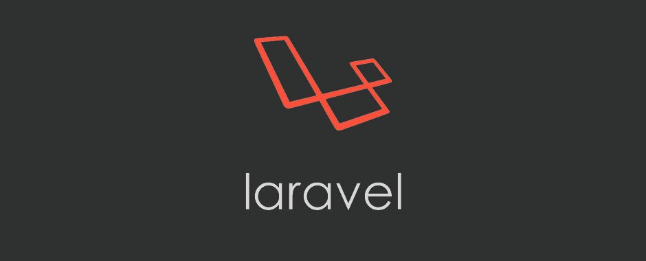

Laravel 5.3 正式发布
作者：王赛 • 2016年8月24日

Laravel 项目组自豪地宣布 Laravel 5.3 正式发布了 ！5.3 版本中的新增特性主要集中在提升开发速度，通过增强常见任务的开箱即用功能提升开发效率。 此版本是常规发布版本，提供六个月的 bug 修复补丁和一年的安全补丁。当前，Laravel 5.1 是最新的 LTS（长期支持） 版本，提供两年的 bug
Laracon 开发者大会快报：听 Taylor Otwell 讲解 Laravel 5.3 的新特性
作者：王赛 • 2016年7月28日

今天， Taylor Otwell 在 Laracon US 开发者大会上就 Laravel 5.3 的新特性作了长时间的演讲，演讲内容主要概括为四个方面：Laravel Scout、Laravel Passport、Laravel Mailable 和 Laravel Notifications。 此次演讲预定是
Laravel 五岁了
作者：王赛 • 2016年6月12日

五年前（2011年6月11日）的今天，Taylor Otwell 将 Laravel 带到了这个世界！ 下面摘抄了部分原文：点这里看完整的原文 I've been working on this framework for about 7 months. I've worked really hard to mak
2016 版 Laravel 系列入门教程（一）
作者：JohnLui • 2016年6月6日
本教程示例代码见：https://github.com/johnlui/Learn-Laravel-5 在任何地方卡住，最快的办法就是去看示例代码。 本文基于 Laravel 5.2 版本，无奈 5.2 的中文文档还没有跟上，大家勉强看一下 5.1 的吧： Laravel 5.1 中文文档： http:
Laravel 5, Laravel入门教程, Laravel 5.2
2016 版 Laravel 系列入门教程（二）
作者：JohnLui • 2016年6月6日

本教程示例代码见：https://github.com/johnlui/Learn-Laravel-5 在任何地方卡住，最快的办法就是去看示例代码。 本篇文章中，我将跟宝宝们一起学习 Laravel 框架最重要的部分——路由系统。 如果你读过旧的基于 Laravel 5.0 版本的此教程，你会发现那篇文
Laravel 5, Laravel入门教程, Laravel 5.2
2016 版 Laravel 系列入门教程（三）
作者：JohnLui • 2016年6月6日